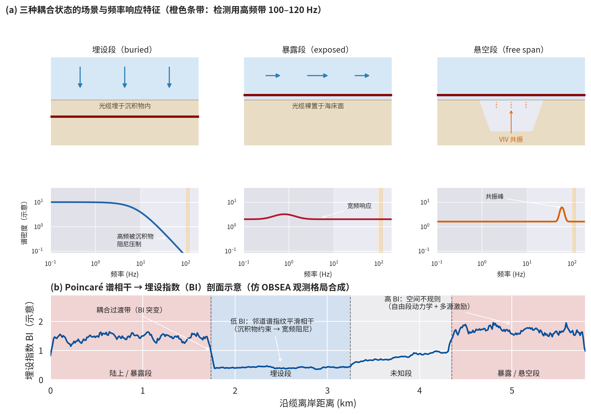

Detecting and Assessing DAS Cable Coupling State¶
Keywords: DAS, cable coupling, burial state, Poincaré spectral coherence, Burial Index (BI), vortex-induced vibration (VIV)
Introduction¶
The DAS fundamentals chapter established the theoretical transfer-function model of cable coupling (jacket-to-fibre coupling \(\eta_\text{fiber}\), medium coupling \(C_\text{med}(f)\) and coupling stiffness \(k_s\)). In real deployments, however, the coupling state varies along the cable and is unknown: a subsea cable may be buried in sediment over one stretch, resting exposed on the seabed over another, and suspended across a scour depression elsewhere. The same physical forcing produces entirely different responses on differently coupled segments; without knowing the spatial distribution of coupling, ambient-noise interpretation, event detection and structural imaging can all be systematically biased.
This chapter addresses the question: how can the coupling state of a cable be detected and assessed directly from DAS data itself — with no controlled sources, no diver inspections, and no prior geological knowledge — in an automated, near-real-time fashion.
Four Coupling States and Their Physical Effects¶
Subsea cable coupling is commonly divided into four states with distinct mechanical constraints and frequency responses:
| Coupling state | Mechanical constraint | Frequency-response signature |
|---|---|---|
| Buried | Sediment confinement adds effective mass, stiffness and damping | Low-pass: mid-to-high frequencies suppressed by sediment damping; low frequencies (gravity-wave band) retained and spatially smooth |
| Partially buried | Intermediate constraint, possibly intermittent contact | Transitional response between buried and exposed |
| Exposed | Driven directly by hydrodynamic pressure | Broadband sensitivity to waves, currents and vessels, but also elevated broadband noise |
| Suspended (free span) | Almost no mechanical constraint | Broadband + resonance: currents drive vortex-induced vibration (VIV), producing narrowband resonant peaks |
Coupling is a double-edged sword for observation
While burial suppresses high-frequency water-column signals, it may improve coupling to solid-Earth wavefields (Scholte, Rayleigh and body waves) — buried segments can actually be better suited to regional and teleseismic monitoring (Taweesintananon et al.). Exposed segments are sensitive to hydrodynamic and anthropogenic forcing but prone to resonant artefacts. Coupling mapping is therefore not only a data-quality tool but also a basis for selecting which cable segments to use for a given observation goal.

Figure 1: (a) Scenarios and frequency-response signatures of three typical coupling states — buried segments are low-pass (high frequencies damped by sediment), exposed segments are broadband-sensitive, and suspended segments show a VIV resonant peak (orange band: the 100–120 Hz high-frequency band used for detection); (b) Burial Index (BI) profile derived from Poincaré spectral coherence: low BI corresponds to buried segments with smooth, coherent spectral fingerprints across neighbouring channels, high BI to spatially irregular exposed/suspended segments, and sharp BI jumps mark coupling transitions. (Synthetic illustration, patterned after the OBSEA layout; following Shiri & Belal, 2026.)Overview of Coupling-State Detection Methods¶
| Method | Observable | Strengths | Limitations |
|---|---|---|---|
| Vessel-induced band energy (Harmon et al.) | Along-cable band-energy distribution during vessel passages | Strong signals, clear contrast | Requires vessel transits; manual interpretation; not continuous |
| Resonance-frequency shift (Taweesintananon et al.) | Changes in near-surface shear-wave resonance frequencies with coupling | Physically direct, independent proxy | Requires identifiable resonance peaks; sensitive to shallow structure |
| Frequency-dependent amplitude modulation (Bakulin et al.) | Amplitude modulation by sub-wavelength seabed stiffness variations | Reveals coupling dependence on wave type (Scholte/Rayleigh/body) | Qualitative; no segment-resolved coupling map |
| Co-located point seismometer | Empirical transfer function \(T(f)\) | Direct readout of the corner frequency \(f_c\) (see DAS: field assessment of coupling quality) | Requires an additional reference station |
| Poincaré spectral coherence (Shiri & Belal, 2026) | Spatial irregularity of spectral fingerprints across neighbouring channels | Unsupervised, near-real-time, lightweight, continuous mapping | Bands must be tuned per site; BI is a relative index, not burial depth |
The Poincaré Spectral-Coherence Framework¶
The framework of Shiri & Belal (2026) converts DAS differential-phase measurements \(Y(t, x)\) into an along-cable coupling indicator in four stages. Everything reduces to short-time FFTs and block statistics — no training, no iterative optimisation — and runs in near real time on a single CPU core.
Stage 1: Two-Band Spectral Fingerprints¶
The data are partitioned into overlapping 2–4 s windows (length \(N_t^{(w)}\)) and tapered with a Hanning window to suppress spectral leakage:
After the discrete Fourier transform, the frequency band energy (FBE — the periodogram power summed over a band) is computed in two physically complementary bands:
- Low band \(B_1\) (e.g., 0.01–10 Hz): persistent large-scale forcing — surface gravity waves, swell, tides — spatially smooth and temporally stable, providing a consistent background reference;
- High band \(B_2\) (e.g., 100–120 Hz): intermittent excitation (vessel harmonics, VIV strumming, flow-induced vibration) — strongly attenuated by sediment damping when buried, hence most sensitive to coupling state.
The two band powers are normalised into a two-dimensional spectral fingerprint:
Band selection is site-specific
The optimal bands depend on environmental forcing, sediment properties, cable construction (armouring, stiffness, diameter) and acquisition parameters (gauge length, channel spacing); they are chosen empirically by systematically inspecting the DAS spectra at each site, aiming to maximise spatial contrast and temporal stability. The two-band framework itself is general — alternative bands can be substituted without modifying the methodology.
Stage 2: The Poincaré-Type Spatial Coherence Coefficient¶
The cable is divided into spatial blocks \(I_b\) of \(M\) channels. With the block-averaged fingerprint \(\bar{\mathbf{f}}^{(w,b)}\), two statistics are defined.
Spectral spread (L2 deviation of fingerprints from the block mean):
Spectral gradient (L2 norm of channel-to-channel fingerprint differences):
To prevent artificially inflated coherence in blocks where both spread and gradient are tiny, a gradient floor proportional to the block energy is introduced:
Sensitivity tests show the result is stable for \(\alpha \in [0.01, 0.1]\). The final effective coherence coefficient:
Why 'Poincaré'?
The ratio is motivated by Poincaré-type inequalities, which relate the variability of a function over a domain to the magnitude of its spatial gradient. Here the spread quantifies within-block variability while the gradient measures the characteristic channel-to-channel change; their ratio gives a dimensionless measure of spatial irregularity: large \(C_\text{eff}\) → dissimilar neighbouring fingerprints (exposed/suspended: free-span dynamics + spatially heterogeneous forcing); small \(C_\text{eff}\) → smooth and coherent (buried: sediment confinement makes neighbouring channels share similar boundary conditions). Because it measures relative spatial variation rather than absolute energy, it is insensitive to global changes in forcing amplitude.
Stage 3: Robust log–MAD–exp Normalisation¶
The raw \(C_\text{eff}\) is non-negative but has a large dynamic range and a heavy-tailed distribution (extremes come from strongly exposed/free-span segments). Three steps follow:
- Log transform to compress large values: \(L[w,b] = \log(C_\text{raw}[w,b] + \varepsilon_3)\);
- Median–MAD normalisation (removes large-scale temporal variations from tides, environmental forcing or interrogator drift):
The factor 1.4826 is the consistency constant relating MAD to the standard deviation under Gaussian assumptions — here it serves only as a reference scale. No normality is assumed; the MAD is chosen precisely for robustness to outliers and non-Gaussian behaviour;
- Exponential mapping back to a positive, energy-like index: \(C_\text{norm}[w,b] = \exp(Z_L[w,b])\).
Stage 4: Spatial Smoothing and the Burial Index (BI)¶
A spatial Gaussian smoothing (\(\sigma = L_\text{smooth}/\Delta x\), reflective boundaries at cable ends) suppresses channel-scale artefacts and emphasises burial-scale structure:
Finally, the median over time windows yields the one-dimensional Burial Index (BI) profile:
BI is a coupling indicator, not a burial depth
The BI quantifies spatial irregularity of the cable–seabed coupling response. Burial is the dominant control, but sediment heterogeneity, water depth and bathymetric gradients, seabed rugosity (via turbulence and scattering), protective structures, local free spans and installation transitions all contribute to BI anomalies. Interpret the BI together with bathymetric and geological context, and always as a relative index.
Field Validation¶
| Parameter | EMEC Eday (Orkney, UK) | OBSEA (Barcelona, Spain) |
|---|---|---|
| Cable length | ~2.2 km (composite power cable) | ~5.8 km (telecom-power cable) |
| Channels / spacing | 1083 / 2.04 m | 4560 / 1.275 m |
| Sampling rate / gauge length | 1 kHz / 10 m | 2 kHz / 20 m |
| Environment | Strong tidal currents (up to 4 m/s), alternating bedrock–sand ripples–erosional scarps | Sediment-dominated, smoother seabed |
| Independent validation | Mapped lithological boundaries (RF/LE/EF/ME) + aerial imagery | Diver/vessel-reported burial segments |
EMEC Eday: the BI profile aligns with mapped lithological boundaries — persistently low BI over the nearshore 200–350 m (buried/well-supported); elevated, fluctuating BI across the Eday Flagstones scarp zone at 450–900 m (weakly supported / free-span); elevated BI near the LE–RF and EF–LE lithological transitions (stiffness contrasts produce coupling contrasts), with a more gradual ME–EF transition. Consistent with the "partially buried" interval inferred by Harmon et al. from vessel-induced band-energy signatures.
OBSEA: the BI agrees strongly with diver-verified segments — high BI over the onshore section (0–1743.5 m); persistently low BI over the "suspected buried" interval (1743.5–3300 m); a gradual BI increase across the "unknown" interval (3242.9–4342.3 m); high, strongly fluctuating BI beyond 4442.5 m ("unburied"). Waveforms and spectrograms at four representative locations confirm the picture: in the buried segment the 100–140 Hz content nearly vanishes while low frequencies (< 30 Hz) remain strong; in exposed segments high-frequency modulation is pronounced.
Computational performance (single vCPU, Google Colab Pro): complete coupling maps of multi-kilometre cables in < 20 s, ≈ 50 s per km·hour of data, 1.3–2.0 CPU-hours per TB — orders of magnitude lighter than deep-learning pipelines.
Artefacts and Pitfalls¶
Do not mistake instrumental artefacts for coupling signals
- Fresnel reflections: imperfect optical termination (especially the uncontrolled underwater distal end) produces persistent broadband high-energy bands visible in raw heatmaps, FBE maps and distance profiles — an acquisition boundary effect, never an environmental or coupling feature; both fibre ends can be affected (the near-end response depends on connector conditions and varies between campaigns);
- Phase fading (Rayleigh fading): destructive interference of the coherent Rayleigh backscatter causes localised signal dropouts and degraded SNR, most visible in the high band;
- Slack sections, stick–slip behaviour, gain variations and channel dropouts can likewise produce artificial coherence discontinuities mimicking coupling transitions.
- Raw time–distance plots are not directly readable: high-sampling-rate DAS data are non-stationary and noise-dominated; burial signatures are essentially invisible in raw t–x plots, so fingerprint- and coherence-based diagnostics are indispensable;
- Bands must be tuned per site (environmental forcing, cable construction, gauge length and channel spacing all shift the optimal bands; longer gauge lengths reduce sensitivity to short-wavelength vibration);
- Depth and rugosity confusion: water depth affects the BI both through burial persistence (sediment-transport pathways) and through the forcing environment (gravity-wave orbital motion decays with depth); a rough seabed can elevate the BI via heterogeneous turbulent forcing even without any true burial transition.
Limitations and Outlook¶
- From classification to quantification: the current framework yields relative coupling segments; future work can move towards quantitative burial-depth estimation using more general regularity diagnostics — spatial total variation, curvature (bending-energy) penalties, multi-band spectral ratios — combined with calibrated attenuation models and independent measurements (ROV/diver surveys);
- Resonance-based proxies and wave-type-dependent coherence attributes offer independent constraints on coupling stiffness;
- Closing the loop: BI maps feed back into DAS data quality control — selecting stable, well-coupled segments for geophysical monitoring, and flagging weakly coupled regions whose hydrodynamic/anthropogenic signals must be interpreted with caution.
References¶
- Shiri, H., & Belal, M. (2026). A real-time framework for mapping subsea cable burial state using Poincaré spectral coherence of DAS measurements. Scientific Reports, 16, 23647.
- Harmon, M., et al. Coupling-dependent frequency-band-energy patterns in vessel signals on a shallow-water subsea cable (one of the source studies of the EMEC Eday dataset; as cited in Shiri & Belal, 2026).
- Taweesintananon, K., et al. Influence of seafloor DAS coupling on near-surface shear-wave resonance frequencies (resonance behaviour as an independent burial proxy; as cited in Shiri & Belal, 2026).
- Bakulin, A., et al. Frequency-dependent amplitude modulation by sub-wavelength seabed stiffness variations (coupling effects depend on the dominant wave type: Scholte/Rayleigh/body; as cited in Shiri & Belal, 2026).
- Martin, E. R., et al. Distributed spring–mass model and low-pass transfer function for cable–medium coupling (see DAS fundamentals).